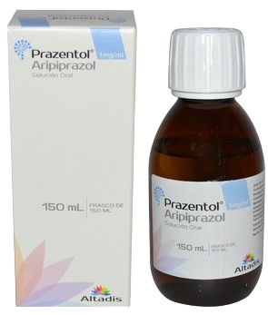
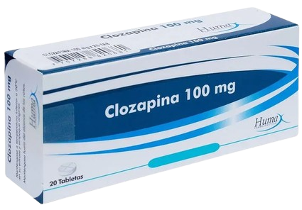
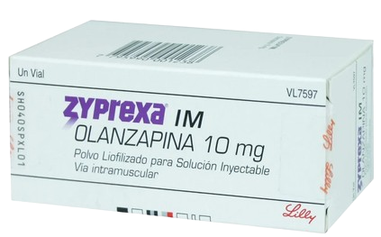
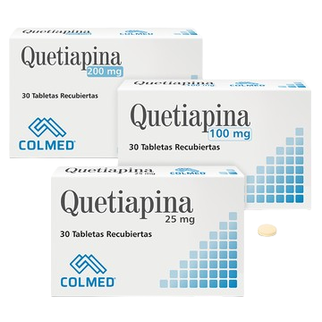
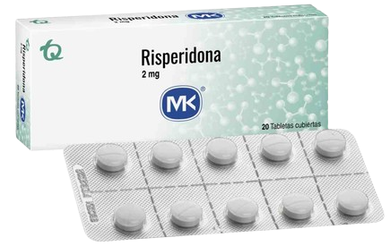

Aripiprazol
Antipsicótico atípico que se utiliza en el tratamiento de una amplia variedad de trastornos psicóticos y del estado de ánimo.
Mecanismo de Acción
La acción antipsicótica del aripiprazol probablemente se deba a su actividad agonista parcial en los receptores D2 y 5-HT 1A , así como a su actividad antagonista en los receptores 5-HT 2A.
Indicaciones
Esquizofrenia, trastorno bipolar, trastorno depresivo mayor, alteraciones comportamentales relacionadas con el autismo y el síndrome de Tourette; coadyuvante en la hiperprolactinemia.
Contraindicaciones
Hipersensibilidad al aripiprazol o a alguno de sus componentes.
Presentaciones
-
Comprimidos de 15mg
-
Solución oral 1 mg/ml
Cuidados de enfermería
Monitorización de los efectos secundarios.
Monitorización de signos vitales.
Evaluación de la función cognitiva.
Prevención de caídas.
Educación en estilos de vida saludable.
Cumplimiento del tratamiento.
Efectos adversos
Agitación, insomnio, ansiedad y depresión; trastorno extrapiramidal, acatisia, temblor, vértigo, somnolencia, sedación, cefalea, disquinesia, visión borrosa, hipotensión ortostática, dispepsia, vómitos, náuseas, hipersecreción salivar, sequedad de boca, aumento de peso corporal.
Clozapina
Antipsicótico atípico o de segunda generación que se utiliza en la esquizofrenia resistente al tratamiento y para disminuir el riesgo de suicidio en pacientes esquizofrénicos.
Mecanismo de Acción
Su efecto farmacológico a través del antagonismo de los receptores de dopamina tipo 2 (D 2 ) y serotonina tipo 2A (5-HT 2A ).
Indicaciones
Tratamiento de pacientes con esquizofrenia refractaria, que no responden adecuadamente al tratamiento antipsicótico estándar.
Contraindicaciones
Hipersensibilidad a clozapina; antecedentes de granulocitopenia / agranulocitosis tóxica o idiosincrásica, íleo paralítico.
Presentaciones
-
Tabletas de 25 y 100 mg
Cuidados de enfermería
Los pacientes son estrictamente monitoreados mediante pruebas de laboratorio (hemograma completo) para garantizar que la agranulocitosis sea detectada y tratada si ocurre.
Control de la troponina, la PCR y el ECG del paciente al inicio del estudio y a los 28 días de tratamiento.
No combinar con levomepromazina.
Vigilar signos y síntomas al inicio del tratamiento.
Efectos adversos
Agranulocitosis, trombocitopenia, miocarditis y miocardiopatía, obstrucción gastrointestinal, somnolencia, mareos, temblor, lipotimia, sialorrea,hipotensión ortostática, disminución del umbral convulsivo, incontinencia urinaria, aumento del apetito y de peso.
Olanzapina
Antipsicótico utilizado en el tratamiento de la esquizofrenia, el trastorno bipolar 1 y la agitación asociada con estos trastornos.
Mecanismo de Acción
Antagonismo receptores neuronales de dopamina D1, D2, D3 y D4 en el cerebro, los receptores de serotonina 5HT2A, 5HT2C, 5HT3 y 5HT6, el receptor alfa-1 adrenérgico, el receptor de histamina H1 y múltiples receptores muscarínicos.
Indicaciones
Tratamiento crónico de la esquizofrenia, trastorno bipolar 1, incluidos episodios mixtos o maníacos. Episodios de depresión asociados al trastorno bipolar tipo 1 y depresión.
Contraindicaciones
Hipersensibilidad conocida a la olanzapina u otros componentes de la fórmula, coma o depresión del sistema nervioso central, glaucoma de ángulo estrecho, insuficiencia hepática grave.
Presentaciones
-
Tabletas de 5 y 10 mg
-
Solución oral
-
Polvo liofilizado para solución inyectable 10 mg
Cuidados de enfermería
Monitorización de los efectos secundarios.
Monitorización de signos vitales.
Evaluación de la función cognitiva.
Prevención de caídas.
Educación en estilos de vida saludable.
Realizar controles del peso corporal y niveles de glucosa.
Monitorización periódica de niveles basales de lípidos sanguíneos (colesterol y triglicéridos).
Efectos adversos
Sedación, somnolencia, mareos, síndrome metabólico (aumento de peso, aumento de glicemia, colesterol y triglicéridos), hipotensión ortostática, mareos, boca seca, estreñimiento, incontinencia urinaria, hiperprolactinemia, aumento del apetito.
Paliperidona
Antipsicótico atípico que se utiliza en el tratamiento de la esquizofrenia y otros trastornos esquizoafectivos o delirantes.
Mecanismo de Acción
También es activa como antagonista de los receptores adrenérgicos alfa 1 y alfa 2 y de los receptores histaminérgicos H1.
Indicaciones
Tratamiento de adultos y adolescentes con esquizofrenia y en tratamiento del trastorno esquizoafectivo en combinación con antidepresivos o estabilizadores del estado de ánimo.
Contraindicaciones
Contraindicada en casos de hipersensibilidad al fármaco, durante el embarazo y la lactancia. Antecedentes de convulsiones, enfermedad de Parkinson.
Presentaciones
-
Comprimidos de 3, 6 y 9 mg
-
Solución inyectable 75, 100 y 150 mg
Cuidados de enfermería
Monitorización de los efectos secundarios.
Monitorización de signos vitales.
Evaluación de la función cognitiva.
Prevención de caídas.
Educación al paciente y su familia.
Dosis oral, tomar siempre en ayunas o siempre con el desayuno, pero no unas veces en ayunas y otras con alimentos. Tragar enteros y no deben masticarse, dividirse ni aplastarse.
Dosis IM, se debe inyectar lenta y profundamente en el músculo deltoides o en el glúteo.
Efectos adversos
Cefalea, vértigo, somnolencia, galactorrea, aumento de peso, estreñimiento, acatisia, discinesia, distonía, parkinsonismo, ansiedad, taquicardia, prolongación del intervalo QT.
Quetiapina
Agente antipsicótico atípico utilizado para el .tratamiento del trastorno bipolar, la esquizofrenia y el trastorno depresivo mayor.
Mecanismo de Acción
En la esquizofrenia, sus acciones podrían ocurrir a partir del antagonismo de los receptores de dopamina tipo 2 (D2) y serotonina 2A (5HT2A).
Indicaciones
Es un antipsicótico atípico de segunda generación utilizado en la esquizofrenia, episodios maniacos asociados con el trastorno bipolar y la depresión mayor.
Contraindicaciones
Hipersensibilidad a quetiapina, concomitante con inhibidores del citocromo (inhibidores de la proteasa del VIH, antifúngicos tipo azol, eritromicina, claritromicina).
Presentaciones
-
Tabletas de 25, 50, 100, 200, 300 y 400 mg
Cuidados de enfermería
Observar posibles efectos adversos, como somnolencia, mareos, hipotensión ortostática, aumento de peso y síntomas extrapiramidales.
Vigilar signos de sedación o agitación excesiva.
Monitorización de signos vitales.
Evaluación de la función cognitiva.
Prevención de caídas, asegurarse de que el paciente se levante lentamente para evitar caídas y proporcionar apoyo si es necesario.
Efectos adversos
Somnolencia, mareos, aumentos de peso, hipotensión ortostática, boca seca, estreñimiento, aumento de los niveles de colesterol y triglicéridos.
Risperidona
Se utiliza para tratar una serie de trastornos de salud mental que incluyen esquizofrenia, psicosis o como complemento en la depresión grave.
Mecanismo de Acción
Bloquea los receptores serotoninérgicos (5-HT2A/2C) y dopaminérgicos (D2). También tiene afinidad moderada por los receptores adrenérgicos (alfa1 y 2) e histaminérgicos (H1).
Indicaciones
Esquizofrenia, tratamiento de episodios maniacos asociados al trastorno bipolar, trastornos de la conducta, con síntomas de agresividad.
Contraindicaciones
Hipersensibilidad a la risperidona, durante el embarazo y la lactancia. Considerar riesgo-beneficio en casos de tumor cerebral, carcinoma mamario, disfunción hepática o renal, enfermedad cardiovascular o cerebrovascular.
Presentaciones
-
Tabletas de 1, 2 y 3 mg
-
Solución oral gotas al 1%
-
Solución inyectable 25 y 37,5 mg
Cuidados de enfermería
Control de los signos y síntomas extrapiramidales.
Evaluación del nivel de conciencia del paciente, especialmente si es un anciano; la sedación excesiva puede dar lugar a ataxia y a caídas.
Valoración de los signos vitales del paciente.
Efectos adversos
Somnolencia, agitación, insomnio, discinesias, fotosensibilidad, hiperprolactinemia, manifestaciones extrapiramidales, hipotensión arterial, ictericia obstructiva, estreñimiento, disuria, galactorrea, hipotensión, convulsiones.